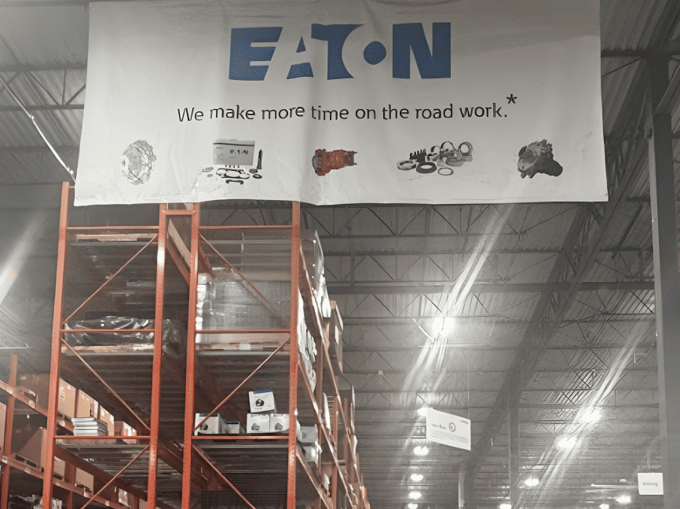

Aug 2024 – Dec 2024
Eaton Corporation
Process Optimization Project Consultant
Indianapolis, IN, USA

Partnered with Eaton’s Mobility Group at the Indianapolis Logistics Center to streamline kitting operations for heavy-duty truck components.
Conducted a comprehensive analysis of inventory management, quality inspection, and communication workflows.
Built current-state and future-state value stream maps, identifying that 55% of inventory parts were misplaced and 45 minutes of each cycle were non-value-added.
Proposed Lean-based solutions including 5S, ABC inventory analysis, barcode scanning, Oracle-based notifications, and layout redesign.
Simulated future-state operations, predicting a 32.8% reduction in lead time and improved workforce utilization.
Tools: Lean (5S, Value Stream Mapping, Fishbone Analysis), Oracle ERP, ProModel - Simulation Modeling, Microsoft Excel, Process Mapping